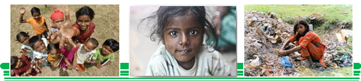
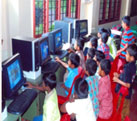
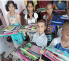
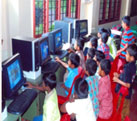
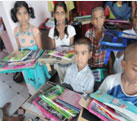

ATHMEYA: HOME FOR ORPHANS
MOTTO : "In strength and grace we stand united; in faith and love we are committed to learn and apply for the benefit of mankind"
VISION:
To rehabilitate vulnerable orphans and abandoned children in ATHMEYA, the centre of excellence for high quality education attained through the promotion of equitable access, quality teaching and learning environment, socially integrated and ethically managed institution that motivates orphans to achieve their own development.
MISSION:ATHMEYA goal is to rehabilitate vulnerable orphans and abandoned children, and gain the benefit of a complete balanced life like having access to education which is also their right. We believe education creates change; it empowers and enables them to build a brighter future and, give them the opportunity to succeed. Not only improving the life of an individual child but also contributing to the development of the child’s community and the society. You never know what these children might become in life
VLCT & RC have come up with a unique and prestigious project “RAVIVASANTHAM”-the sevagram providing care for orphan children because, they are the future, they are vulnerable, and most importantly, because they are children and this is fulfilled by ATHMEYA: a HOME FOR ORPHANS.
Our inherent responsibility to care for children and protect the future for our own children, it's plain to see that the orphan children of this world are something we simply cannot ignore VLCT & RC is a non-profit, social service voluntary organization working for an integrated development of children of vulnerable segment of the society having clear insight in the socio-economic and health issues faced by the downtrodden, under privileged and marginalized segments of the communities. And believes that all human beings are equal and has the right to have good health and proper standard of living and has touched new heights by Regular Activities to fulfill the mission of organization.
“ATHMEYA is a residential home- devoted to the care of orphans”
Most important necessities of orphans' lives is a safe and secure roof over their heads Every person ever conceived, was born with specific needs Those needs include, critical needs such as food and shelter. ATHMEYA creates and provide that critical needs which are continue to be met, bonding, mentoring and nurturing which lead to a sense of belonging as well as self actualization, or self worth...the belief that one is of value to themselves and others In essence, every orphan child will either perish or receive his or her basic human needs from some source...good or bad. We have supplied financial aid, equipment, staff training, educational materials, medicines, clothing and toys to many in and around Nellore. But we don't want to stop there. We want to create a close, family with a touch of humanity, love and compassion, orientated environment by providing much more personal care.
Having a one day meals is very hard for this children where nutritional is a distance dream for them, we VLCT & RC is committed and dedicated to provide Quality and Nutritional food for these children in “RAVIVASANTHAM”-the sevagram. High quality and Nutritional food is served to these children with a detailed and time framed schedule allocated for the week maintaining high standards and improve the immunity and strength in the children.
VLCT & RC believes and also strives that Education is basic right of every child very much necessary for these misfortune children who are deprived of, hence education being part of our curriculum in ATHMEYA, we strive to impart basic education for these children and later impart into mainstreams of schools and colleges..
 



All the children of the home once incepted will be thoroughly screened medically and emotionally in order to know the status of the child physically and mentally such that a details curriculum will prepared according to the necessity of the child. After screening every individual child will be provided with free medical services as per the results derived.

to improve the child mentally and physically various kinds of sports and cultural activities are conducted in the home. Children also do participate in stage shows conducted at district level, such that they are also equal among the other children of the society and develop a sense of belongingness.
We in ATHMEYA not only emphasis on all the above mentioned but also gives importance about children’s mental status. Various kinds of cultural activities are conducted in the house to extract and improve the abilities of each and every child which are hidden in them. To bring out the best out of them and to improve intra mural relationships these kinds of cultural activities help them most. Apart from cultural activities the house will conduct excursion trips to different parts of the district to enhance the thinking abilities among the children and creating an atmosphere where the child can feel that he is in a family which helps him to do more for the family.
As the children get older and approach the age at which they will be integrating into their own society as young adults, there is much to be done. We must make an assessment of their level of education and make a plan for continuing education or employment. We must consider where they will live while they are in this transitional phase. We must also purchase new items for the home to prepare for the new child that will be moving in as the older, young adult transitions out. This ongoing process does make and create a family of Love filled with compassion and trust to endeavor humanity.